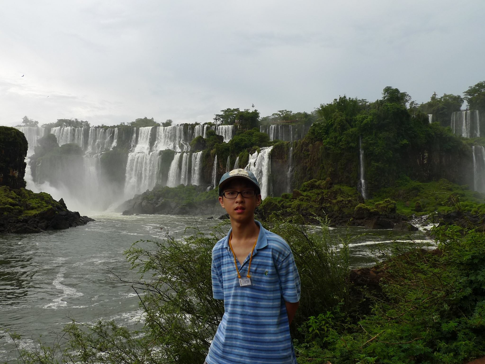
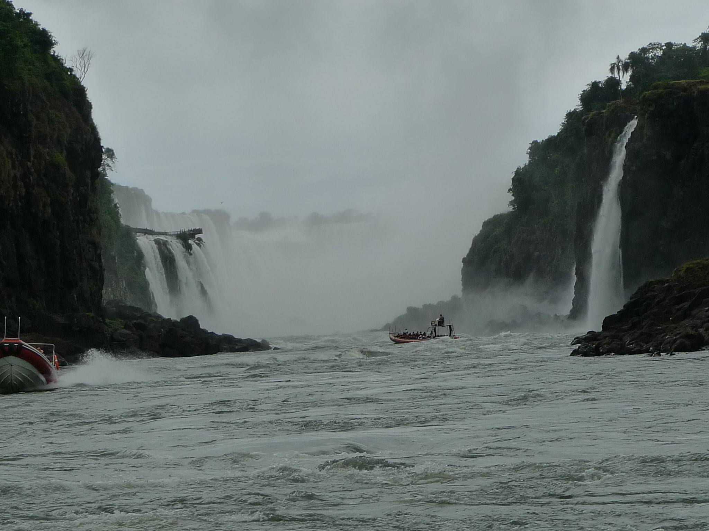

位於阿根廷巴塔哥尼亞，聖克魯斯省冰川家公園的佩里托莫雷諾冰川。
冰河給人的感覺非常震撼，在親眼看到之前都覺得照片是假的。很難想像冰河表面竟是如一根根巨大冰錐般矗立累積而成，我們還曾配戴裝備攀登於上。表層為雪地，內層則為堅實的冰，經過光線的折射反射而產生非常深的藍色，與平常我們預期的透明有很大的差異。如此獨特而雄偉壯闊，不禁令人讚嘆大自然的偉大。
位於阿根廷與巴西邊境的伊瓜蘇瀑布，為世界上最寬的瀑布。
有一項好玩的活動是乘坐小船，船長會駕船向幾個比較小的瀑布衝過去，讓乘客體驗被由高處落下的瀑布水流衝擊的快感。雖然活動體驗的瀑布跟伊瓜蘇最大的幾個瀑布(例如魔鬼咽喉)比起來根本只算是小水流，但水壓強烈的衝擊力道仍然會讓人抬不起頭。